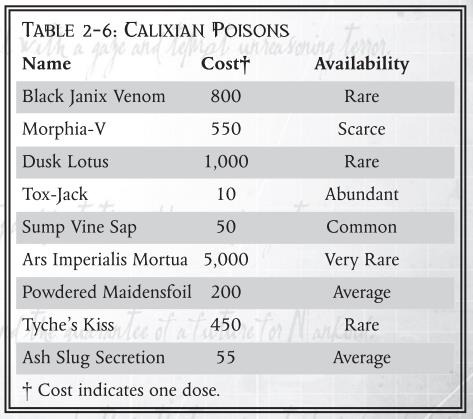

v1.3.1
本文档内容来自 40k 跑团群翻译文件和 B 站专栏——已经汉化的黑暗异端 1 版 可购买的扩展物品与服务
请注意，文档肯定存在勘误、不完整、不统一等问题，因此本文档也只是刚好能用的水平。
荣誉归于以下译者：
《GM 工具》毒药规则——五三点九
《审判官手册》资源——白日铸炉、红达貊、萝卜、PhgFenix、浣熊旅记、维维豆糕、五三点九
《黑暗诸神的信徒》资源——石盾人
《激进派手册》资源——白日铸炉、卡里西斯秘会秘教徒、PhgFenix、石盾人
《升扬》资源——红达貊、维维豆糕
《忠烈之血》资源——白日铸炉、红达貘、浣熊旅记、维维豆糕
《恶魔猎手》资源——红达貘、上海的人形
《裁决之书》资源——白日铸炉
《拉斯世界》资源——迷路的幻象、维维豆糕、五三点九
如有翻译错误、数据勘误或是译者名字遗漏欢迎大家找我指正与添加。
FFG 种植园
2026.4.28
【译者：五三点九】
毒药和毒素是攻击人体自然防御系统并造成伤害的物质。在卡利西斯星区内有毒物质种类繁多，从天然毒液到能像刀剑般迅速致命的有毒污染物。
在游戏术语中，毒药和毒素主要分为三个要素： 速度、强度和效果。
速度决定了毒物进入受害者体内的快慢。
瞬间（Instant）
毒药效果在受害者接触时立刻生效；除非另有说明， 毒液和淬毒攻击均以该速度起效。
——译注：关于毒液和淬毒攻击：
（1）前文提及过天然毒液（Natural Venoms） ，因此推测上文的毒液（Venoms） 是指核心规则中的生物特性——毒素。
毒素（Toxic）
该生物带有毒素，可通过天生武器来传递毒素。被命中的目标必须进行坚韧检定。该毒素也可以被替换为靠接触该生物的皮肤或吸入该生物的气味传递。如果目标检定失败，则中毒。典型的毒素会立刻造成 1d10 伤害，无视护甲保护。如果生物描述上注出了其它效果，则以具体描述为准。
（2） 淬毒攻击（Poisoned-attacks） 应该是指核心规则中的武器特性——淬毒。
淬毒（Toxic）
有的武器依靠毒药造成伤害。在计算护甲和坚韧加值之后，如果受到淬毒武器的伤害，必须以-5/每点伤害的惩罚进行坚韧检定。成功表示毒素没有对你造成影响。失败会立刻受到 1d10 点毒素伤害，坚韧和护甲均无法防止此伤害。
迅速（Swift）
毒药会在接触后 1d5 小时生效；包括刺客喜欢用来污染食物的隐蔽毒药。
缓慢（Slow）
毒药的效果将在接触后 1d5 天内显现；包括环境中的毒药和污染。
为了使毒物生效，受害者必须没能通过坚韧检定。毒药的强度是该检定的调整值。一些相对较弱的毒药会给检定提供加值而非减值。请注意，“–”表示该毒药没有坚韧检定调整。
毒药被分为四种效果类型；然而，也可能存在许多“更独特”的效果。
——译注： 《激进派手册》的药物部分扩展了更多效果。
致命（Lethal）
此类毒药通过直接攻击身体机能来造成伤害；破坏神经系统，导致心脏骤停等。受害者会受到 1d10 的临时坚韧属性伤害，以及每一点失败度增加 1d10 的伤害。如果坚韧降至 “ 0”，除非立即接受医疗救治（Medical Help），（或燃烧一个命运点以避免死亡）否则受害者将死亡。此外，如果受害者的坚韧属性损失超过一半，他们还会陷入昏迷 1d5 小时。
麻痹（Paralytic）
此类毒药会麻痹肌肉组织，使受害者无法移动或无助，但不会导致昏迷。受害者将承受 1d10 的临时力量属性伤害，以及每一点失败度增加 1d10 的伤害。若力量属性降至 “ 0”，则完全瘫痪且无法行动。该麻痹状态及力量属性伤害将在 2D5 减去受害者坚韧加值（TB）的小时数内消退。
——译注： 无助（Helpless） 是特定状态，相关内容如下。
无助的目标
攻击睡眠中，无意识状态，或处于其它无助状态的目标， WS 检定自动成功。计算伤害时投两次骰子并相加。如果任何一枚投出 10，则你有一次造成正义之怒的机会。如果两枚骰子全部投出 10，则自动造成正义之怒，直接再次投伤害。
镇静（Sedative）
此类毒药会使受害者失去行动能力并不省人事。未通过坚韧检定的受害者会眩晕 1d10 分钟，但如果检定失败度达到 3 或以上，受害者会陷入 1d5 小时的昏迷。
——译注： 眩晕（Stunned） 是特定状态，相关内容如下。
眩晕
某些伤害，灵能，以及击昏天赋都可以使人眩晕。
眩晕的角色无法进行任何动作，包括闪避，攻击眩晕的目标可以得到格斗能力（WS）或射击能力（BS）检定 +20。与眩晕的角色相邻不再视为于该角色近战状态。眩晕的角色并非无助，对周遭事物也有所警觉。
坏死（Necrotic）
此类毒药通过腐蚀或破坏组织细胞，从而对机体造成局部性损伤。许多强酸、工业污染物以及某些天然毒液（用于溶解和消化肉体）均会引发此类损伤。如果受害者对此类毒素的坚韧检定未能通过，其承伤将承受额外伤害（通常为 1d10 ），且不受护甲或坚韧加值（TB）的减免。
吗啡雅-V（瞬间/– 20/镇静）。
吗啡雅-V 是一种速效毒药，一旦进入受害者体内就会立即生效（瞬间）。这种毒药药效强烈，旨在“压制”受害者（坚韧检定– 20）。最后，一旦进入受害者体内，毒药就会使其丧失行动能力；如果受害者未能通过坚韧检定，他们会被眩晕 1d10 分钟（镇静）。
这里仅列举了卡利西斯星区中“发现”的一些最臭名昭著的毒物。
黑加尼克斯毒液（Black Janix venom）
（瞬间/+10/致命）
这提取自约先河段（Josian Reach） 的死亡世界祸患（Woe）的黑加尼克斯蛇毒液。幸存的受害者将遭受致命毒液所引发的恐怖幻觉折磨，精神严重受创（受害者须另行投掷《黑暗异端》规则书英文原文第 137 页的“致幻效果表”）。
吗啡雅-V（Morphia-V）
（瞬间/–20/镇静）
马尔菲安（Maflian）贵族们广泛使用这种毒药，目的是向敌人发出“警告”——下次使用这种毒药时，它不会让人失去行动能力，而会致死！
黄昏莲花 外号“折磨”（Dusk lotus A.k.A. “The wrack”）
（迅速/-10/致命；此外坚韧属性伤害为永久）
这是马尔菲安次星区（Malfian sub）蛮荒世界黄昏（Dsuk）中肮脏且致命的动植物的又一例证。这种毒素是从黄昏莲花那美丽的白色花朵中提取出来的，这种植物在那个动荡星球的当地人中也被称为“死头绽（Death’s head bloom）”。之所以被称为“折磨（Wrack）”，是因为当毒素在体内循环时，受害者会感到剧烈的疼痛。
毒杰克（Tox-Jack）
（瞬间/–10/坏死（1d10））
这是卡利西斯星区中许多毒针手枪和步枪的标准“装填物”。毒杰克如此流行的原因是其易于获取，它源自该星区各工厂和巢都中使用的标准工业冷却剂。
污沼藤汁（Sump Vine Sap）
（缓慢/ - /致命）
一种性质单纯的天然毒物，通常是通过饮用被污沼藤（发现于农业世界德瑞斯（Dreath））污染的水源而被摄入。将污沼藤汁走私至外星球是一桩利润丰厚的黑市买卖。
帝陨毒技（Ars Imperialis Mortua）
（瞬间/-30/致命）
一种刺客庭（Officio Assassinorum）专属标志毒物，极其稀有、难以追查且价值连城。它有时也被称为“灰终（Grey death）”，其效迅猛，足以令受害者在言语间猝死；他们死后面容的颜色会明显变灰，双眼渐渐随之覆上白色。
少女箔粉（Powdered Maidensfoil）
（迅速/ - /镇静）
必须通过食物或者饮品中摄入才能生效。其原料取自少女箔（Maidensfoil）的花粉与研磨花瓣，它是一种常见于封建世界埃科瑞奇（Acreage）的绿篱植物。富有胆识的商人将其外销，该植物遂兼具多种药用价值与邪恶用途。
堤喀之吻（Tyche’s Kiss）
译注：堤喀（Tyche）是希腊神话中的命运女神，该名称源自希腊语“Τuχη”，意为“机缘”或“幸运”。堤喀形象通常为戴冠持聚宝盆的带翅女神，并蒙眼表示命运无常。
（缓慢/-30/麻痹）
这种毒药的效果可持续数天而非数小时，除非经过医学检查，否则受害者会看似死亡。这种毒药是从一种奇特的血红兰花（Blood-red orchid）的种子中提取而来，据说这种兰花最初是通过杂交伊卡索斯（Iocanthos）的鬼火花（Ghostfire）而培育出来的。它具有“伪装”死亡的能力，已被用作逃避法律的邪恶工具，也是谋杀的特 别凶险手段；受害者醒来时会发现自己遭到活埋。
灰蛞泌液（Ash Slug Secretion）
（瞬间/+20/麻痹和坏死（1d5））
一种强腐蚀性粘液，由该星区众多巢都世界荒废区（Waste zones）内食腐为生的灰蛞蝓所分泌。这种恶心的黏液足以让行动迟缓的野兽对粗心大意的人构成严重威胁。一些拾荒者和恶棍会收集这种有毒的污物来涂抹刀刃或设置毒陷阱。

（原文件空白页）
【译者：白日铸炉、红达貘、萝卜、PhgFenix、浣熊旅记、维维豆糕、五三点九，详见编注】
此类武器因其尺寸与速度而难以被格挡。试图格挡带有“迅捷”特性武器的攻击时，对手的武器技能检定将受到-20惩罚。
类型：近战（原始）
混种剑，亦称手半剑，因其剑身介于传统长剑与更为庞大的双手剑之间而得名。混种剑在耙卫（Harrowguard）中应用最为广泛，这支精英部队由效忠于军阀骷髅王（Warlord Vervai Skull）的艾坎索斯（Iocanthos）战士组成。其剑身修长、分量沉重，唯有最训练有素的战士方能单手握持。为适应不同使用者，此类武器设计了较长的握柄以提供灵活性，让持用者可根据情况选择单手握持或双手握持。
类型：近战（原始）
小圆盾是一种小型盾牌，旨在提供一定防护的同时不牺牲机动性。其尺寸较小，不足以有效防御弓箭或弩箭这类原始远程武器。然而，它在格挡近战武器的打击时效果显著。部分小圆盾外侧装有带倒刺的大型尖刺或矛头，因此也可用作进攻性武器。
在埃科瑞奇（Acreage）世界，一种小圆盾风格的武器发展出了从盾牌边缘伸出的小型金属尖刺，将这种通常用于防护的装备转化为致命武器。埃科瑞奇小圆盾的数据与普通小圆盾相同，但还可以进行投掷攻击，射程为 8 米。
类型：特种（链棍）
链棍由两根短棒构成，中间以一段坚韧的筋腱相连。在其他更为先进的世界上，此设计的变体常采用坚固的链条和钢结构。在费里西斯世界，短棒的末端涂有从致命的费里西斯蛇身上提取的毒液。因此，使用者必须具备高超技巧，以免在试图攻击敌人时反被毒液所伤。
类型：近战（原始）
这种刀身短而厚重的武器在海军军官与船员中最为流行，在帝国境内的众多封建世界中都能觅得其踪。它专为近距离格斗设计，是一种简单粗暴的武器，依靠使用者的蛮力而非技巧或精湛技艺取胜。在帝国海军军官的装备中，水手弯刀有时会配备动力场（power fields）或其他技术升级。
类型：特种（双头链枷）
佩诺尔帕斯（Penolpass）世界那些灵动如舞的战士们以双头链枷作为主战装备。这种武器结构独特，由一根粗壮木柄两端通过锁链连接两个带刺的锤头构成。鉴于其复杂性，有效使用它需要极高的技巧。此武器的真正大师——佩诺尔帕斯鲜血教团（Blood Order）的成员——能将其运用得如同一支致命而优美的舞蹈。在极少数情况下，这种武器的木柄可以拆分为两个较小的链枷。
类型：特种（闪电链）
埃科瑞奇世界是闪电链的发源地，尽管这种奇特的武器如今已传播至其他世界。乍看之下，它不过是一段长约 1~1.5米、带刺的锁链。但仔细观察便会发现，此链由埃科瑞奇独有的特殊合金锻造而成。这种合金能以某种方式“储存”动能，并在锁链因任何剧烈、猛烈的力量而运动时，以蓝色电火花的形式释放出来。在战斗中正确使用时，闪电链的受害者不仅会遭受可怕的撕裂伤和骨折，还会因锁链运动时“迸发”的扭曲能量场而被灼伤。
这种武器极为危险，连使用者也无法幸免于其迸发的电弧。为避免双手被灼伤，闪电链的使用者会佩戴由埃科瑞奇当地类似格洛克斯兽的猛兽的坚韧兽皮制成的厚手套。这种耐用的皮革能提供一定的绝缘效果，抵御锁链运动所产生的能量。
类型：特种（闪电拳套）
闪电拳套由与埃科瑞奇闪电链相同的合金制成，但因其制作所需的技艺高得多，故而更为罕见。由于拳套无法像闪电链那样快速挥动，其动能效应有所减弱。尽管如此，被闪电拳套击中面部者仍可能受到严重伤害，甚至不幸逝世。拳套内侧衬有一层与闪电链使用者所用相同的兽皮，提供同样的保护。
类型：近战（原始）
费里西斯长刃佩剑是一种修长的弧形剑，需要双手握持。它比许多其他刀剑更为锋利，因为费里西斯的金属是一种极其坚韧硬质的材料，经过反复折叠锻造，形成了剃刀般锋利的刃口。唯有附带动力场或单分子刃的武器才有望超越长刃佩剑的锋利度。
长刃佩剑由费里西斯的贵族们佩戴使用，但在该世界的众多拜死教派（death cults）中也能觅得其踪。费里西斯的社会极其嗜血，建立在以 仪式性谋杀作为获取地位和财富的手段之上。因此，所有贵族通常都会装备这种武器，以防范刺客和其他潜在的篡位者。
类型：近战（原始）
这种盾牌因瑟芙利斯次星（Sepheris Secundus）的皇家鞭笞者（Royal Scourges）卫队而闻名遐迩。镜盾是一种华丽的矩形盾牌，足以覆盖使用者约三分之二的身体。它由金属层和染色晶体硅玻璃层构建而成，表面绘有贵族们色彩斑斓的纹章徽记。其折射性玻璃赋予了盾牌镜面效果，能够有效抵御低强度激光武器的射击。因此，在瑟芙利斯次星这样先进武器被统治着行星的男爵们所垄断的世界上，它被视为贵族战争与“荣誉事务”的典范。
若将其用作抵御远程攻击的掩体，盾牌的尺寸足以保护持盾的手臂以及另一个身体部位（通常是躯干），提供 8 点护甲值（原始）。得益于其特殊构造，瑟芙利斯镜盾在面对激光武器时，仍能保持全部的护甲值。
类型：近战（原始）
月刃主要由巴尔卡恩（Balecarne）部落中的精英组织“新月兄弟会”（ Crescent Brotherhood）使用，后者来自于约先河段（Josian Reach）的蛮荒世界蒙斯克（Munsk）。随着时间的推移，该部落已在星系内的邻近世界上衍生出姐妹部落。
月刃由两把新月形的刀刃组成，每把长约 30 厘米。使用者双手各持一刀，握持于刀刃中部——通常会在刀刃中间缠绕一层皮革以保护使用者的手。新月的尖端点向外，远离使用者自己的身体。月刃难以掌握，需要多年时间才能完全精通。善于使用此武器的专家，尤其是新月兄弟会的成员，能够运用月刃施展致命打击，并可将其作为短程投掷武器使用。
类型：近战（原始）
拳刃是一种结构简单的武器，其刀身安装在手上的方式类似于佩戴铜指虎。虽然不如刀剑或更大的武器那般高效，但在传统武器会碍手碍脚的狭窄隔间和逼仄空间内战斗时，拳刃将成为宝贵的辅助工具。
类型：近战（原始）
作为骑兵部队及其他马上战士钟爱的武器，马刀在艾坎索斯（Iocanthos）和沃隆克斯（Volonx）等世界随处可见。这是一种刀身修长、弯曲、单面开刃的刀剑。该武器卓越的平衡性让骑手可以腾出一只手来控制坐骑，其实用性和有效性使其在技艺高超者手中成为一件非常得心应手的武器。在远为先进的文明环境中，马刀仍持续被使用，并且深受许多帝国卫队军官和巢都贵族的喜爱，常常配备单分子刃甚至动力场来增强其效能。
类型：近战（原始）
尽管主要用做农具，但镰刀有着充当武器的“第二职能”历史。总体而言，镰刀在这方面远非实用，既笨拙不堪，又只能对付最无经验的对手。镰刀最常见的用途是作为仪式中的道具，或传达特定的形象。例如，卡利西斯密会的审判官加德·贾斯塔彻（Gard Justarcher）就以挥舞一把缠绕着红色、噼啪作响能量带的镰刀而闻名。
类型：近战（原始）
三尖叉是一种长柄武器，在其“工作”端装有三根单刃尖头。它在巴利卡斯特（Balecaster）最为常见，是星辰圣殿（Star Sanctum）的内廷卫队（Inner Guard）使用的象征武器。尽管在战斗中使用这些武器的机会极为稀少，但组成内廷卫队的战士们在其使用上接受了高度训练，花费了无数小时磨砺技巧以达到完全精通。
类型：近战（原始）
这些笨重且性能不稳定的装置是瑟芙利斯次星（Sepheris Secundus）和科斯弗莱姆（Coseflame）等世界上使用的原始采矿设备。在这些世界，像机械教青睐的破拆器（breacher）那样更精密的工具无法维护。它由一个沉重、滚烫的背包式蒸汽压缩机提供动力，驱动一个巨大的钻孔钻头。它们并非是作为武器来设计的，然而，若不幸者挡在钻头前方，它们也能造成非常严重的伤害。
要将蒸汽钻机用作武器，角色的力量加值需要达到 4 及以上。力量加值低于 4 时，每低 1 点，角色在武器技能上承受-10 惩罚。蒸汽钻机极为笨重，携带时会使角色的敏捷承受-10 惩罚。
蛮荒世界的护甲往往由天然材料制成，包括木材、兽皮和骨骼。而封建世界得益于对冶金术更深入的理解，可能会在防护装备中加入更坚韧的物质。铁或钢是标准配置，不过有些世界可能使用青铜甚至纯铜。
类别：近战（原始）
细刺匕首是一种刃身狭长的匕首，设计便于隐蔽，也便于深深刺入肉体、击穿要害器官。它并非为持久战锻造，而是为了让使用者能快速、安静地解决敌人。细刺匕首在封建世界随处可见，尤其在重型装甲普及的地区更为常见—— 因为这种武器可以从重甲的缝隙间刺入，攻击内部脆弱的肉体。
塔盾是一种由木材或金属制成的巨型盾牌，其作用更偏向提供机动屏障，而非主动格挡防御。在寇斯火焰（Coseflame）星球的峡谷与狭窄通道中，简易的镀铁塔盾十分常见；而蒙拉斯星球上镶嵌青铜与木质的塔盾，被视为艺术品。
木制塔盾为持有者提供全身 6 点 AP（原始）的防御能力，同时金属制塔盾提供全身 8 点 AP（原始）的防御能力，均可以与任何护甲叠加；持有塔盾的人必须承受敏捷加值（AB)-2 的惩罚。
| 武器名称 | 属性 | 伤害 | 穿甲 | 属性 | 重量 | 花费 | 稀有度 |
|---|---|---|---|---|---|---|---|
| 混种剑 | 近战 | 1d10+1 R | 1 | 原始 | 5KG | 50 | 一般 |
| 武器名称 | 属性 | 伤害 | 穿甲 | 属性 | 重量 | 花费 | 稀有度 |
|---|---|---|---|---|---|---|---|
| 小圆盾 | 近战 | 1d5–2 I | 0 | 平衡、原始 | 1kg | 30 | 普及 |
| 链棍 | 特种 | 1d10+1 I | 0 | 迅捷、原始、淬毒 | 1kg | 30 | 匮乏 |
| 水手弯刀 | 近战 | 1d10 R | 0 | 原始、失衡 | 3kg | 10 | 普及 |
| 双头连枷† | 特种 | 1d10 I | 0 | 柔韧、原始 | 4kg | 28 | 匮乏 |
| 闪电拳套 | 特种 | 1d10 I | 0 | 原始、震击 | 2kg | 80 | 匮乏 |
| 闪电链† | 特种 | 1d10+1 I | 0 | 柔韧、原始、震击 | 4kg | 100 | 罕见 |
| 长刃佩剑† | 近战 | 1d10+2 R | 2 | 平衡、原始 | 3kg | 70 | 罕见 |
| 瑟菲瑞斯镜盾 | 近战 | 1D5-1I | 0 | 防御、原始 | 3KG | 60 | 稀有 |
| 月刃 | 近战 或 投掷 5m | 1d10 R | 0 | 迅捷、原始、笨重 | 3kg | 25 | 稀有 |
| 拳刃 | 近战 | 1d5+1 R | 2 | 原始 | 0.5kg | 4 | 丰富 |
| 马刀 | 近战 | 1d10 R | 0 | 平衡、原始 | 2kg | 15 | 普及 |
| 镰刀† | 近战 | 1d10+2 R | 0 | 原始、笨重 | 5kg | 12 | 不常见 |
| 三叉戟† | 近战 | 1d10 R | 2 | 原始、失衡 | 6kg | 45 | 稀有 |
| 蒸汽钻机† | 近战 | 2d10 I | 3 | 原始、失衡、笨重 | 18kg | 100 | 罕见 |
| 细刺匕首 | 近战 | 1d5–1 R | 2 | 迅捷、原始 | 0.2kg | 25 | 不常见 |
| 塔盾（木制） | 近战 | 1D5+1I | 0 | 防御、原始 | 5KG | 40 | 不常见 |
| 塔盾（金属制） | 近战 | 1D5+2I | 0 | 防御、原始 | 7KG | 60 | 稀有 |
†标记表示该武器需要双手使用。
*译注：稀有度-不常见原文为 Uncommon，稀有度表里找不到这个等级。译者的理解是稀有度位于一般和匮乏之间。
| 武器名称 | 属性 | 射程 | 伤害 | 穿甲 | 特性 | 重量 | 花费 | 稀有度 |
|---|---|---|---|---|---|---|---|---|
| 链锯刃 | 近战 | 1d5+3R | 2 | 撕裂 | 2.5kg | 80 | 匮乏 | |
| “蛇行”动力刺剑 | 近战 | 1d10+2E | 6 | 迅捷、分解力场 | 1.5kg | 2,500 | 非常稀有 | |
| 砍刀 | 近战 | — | 2d5R | 2 | — | 2kg | 50 | 稀有 |
| “恶魔之吻”短剑 | 近战 | — | 1d5R | 3 | 迅捷、原始 | 0.3kg | 55 | 稀有 |
| “帝皇细语”剑 | 近战/投掷 | 5m | 1d5+1R | 2 | 平衡 | 0.5kg | 150 | 非常稀有 |
| “惩戒者”警棍 | 近战 | — | 1d10I | 0 | — | 3kg | 50 | 一般 |
| 被诅咒之剑“渲染者” | 近战 | — | 1d5+1R | 0 | 原始、撕裂 | 1.2kg | 50 | 稀有 |
| 西格莱特短剑 | 近战 | — | 1d5R | 3 | 防御 | 0.75kg | 85 | 稀有 |
1.破拆器：除非架设使用或者作为特殊植入物，将破拆器作为近战武器使用需要 5 点 SB，否则将承受-10WS/SB 的惩罚；该武器确认正义之怒后决定伤害时投 2D10。
2.神盾式能量剑：这把剑没有实体的剑刃，其剑刃由纯粹能量组成，因此在计算伤害时不计入力量加值（SB）；其在格挡攻击时如果成功度在 2 点及以上，则摧毁来袭武器，但是如果取得了 5 个及以上的失败度，它将击中使用者自身；由于使用时的噪音和光线，在剑刃展开的情况下潜行自动失败，同时它会如等离子手枪一般消耗能量罐，每个通过线缆链接到能量剑上的能量罐能为它提供 10 回合的能量使其工作。
3.机神斧：持有者在与机械教角色进行的社交检定中取得+10 加成，同时机神斧也自带一套组合工具（技术应用+20）；机神斧几乎毫无其他入手途径，基本只能由高位者赠与一名做出过突出贡献的机械神甫。
4.活体解剖器：持有者审讯和恐吓检定+10，用于维修机仆或者解剖尸体的医学检定+10。可以通过花费额外 500 王座币为其安装注射器，获得【淬毒】特性
| 名称 | 特性 | 射程 | 伤害 | 穿甲 | 特性 | 重量 | 价格 | 稀有度 |
|---|---|---|---|---|---|---|---|---|
| 特种武器 | ||||||||
| 破拆器 | 特种 | — | 1d10+5R | 4 | 特殊、撕裂、笨重 | 18kg | 750 | 匮乏 |
| 活体解剖器 | 特种 | — | 1d5+5R | 0 | 撕裂、笨重 | 1.5kg | 650 | 稀有 |
| 动力武器 | ||||||||
| 能量剑 | 近战 | — | 1d10+6E | 7 | 平衡、分解力场 | 1kg | 5,000 | 非常稀有 |
| 机神斧 | 近战 | — | 2d10+5E | 6 | 分解力场、笨重 | 7kg | — | — |